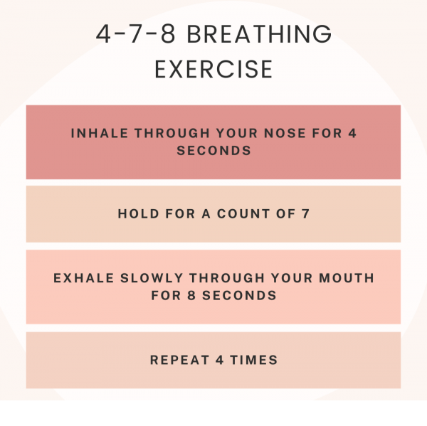

The first thing that comes to mind, I cannot help but compare my learning progress to other's within the cohort, despite understanding that everyone comes into this with different backgrounds and strengths. I know some have stronger technical skills while others are more comfortable with Core, but after seeing the quality of some of the work being produced, I find it difficult to be truly satisfied with my own. I still regularly fall down the hole of “I’m so behind and I will never catch up!” whenever I see someone sharing work ahead of where I am in the Sprint.
Although I’m not a perfectionist, my “Am I good enough/Will I ever be good enough?” thinking tendencies really get in the way of progress. Especially in the last couple weeks, I’ve noticed after submitting my weeks work I cannot shake the anxious feeling that I might’ve missed a crucial aspect, even though that has never happened. I’ve been prioritising meditation morning and evening with the Calm app and have found this helpful for combating these intrusive automatic thought patterns.
On a more positive note, I’ve learnt how disciplined and determined I can be when it comes to learning. I didn’t think I could work this productively unsupervised and would enjoy it. I’ve overcome a few obstacles over the course of Foundations and have handled them better than I ever would’ve anticipated. I think this is due to the Core aspects of the curriculum, and the early problem solving methods we were required to implement. Although I still struggle with self doubt, I’m happy that I’m not afraid to ask for clarification or advice from my peers and facilitator.
To me, self-awareness is possibly the most important part of learning to program. Being self-aware means that you can identify when you’re drifting from a Growth Mindset and aids in accurately reflecting on your work at the end of each week. It’s also helped me to isolate and improve on areas I feel deficient in.
Learning requires empathy towards your own limitations and those of others you are learning alongside. Early on, I was beating myself up for needing to take breaks from sitting at my computer, or taking ample time to process new concepts. I now understand my learning process a little better, so although it may feel un-productive to make a 5th cup of tea or go for a walk in the middle of studying, it’s actually assisting my progression. Empathy is a very important aspect of effective teamwork, and approaching all situations from a place of kindness and genuine desire to reach a mutually beneficial solution creates a healthy, supportive learning environment. If someone asks for help and feels like a burden, they are less likely to ask for help in the future and will be less productive as a result.
Honestly, how much I can still learn about myself and others! I’m someone who’s done therapy on and off for the last decade and felt like I would breeze through the core concepts easily. I’m friendly, introspective and the majority of my interactions with people are positive, so wasn’t anticipating learning SO much from the Core skills. Examples are improving my active listening skills and also asking focused questions. It’s been surprising how effective it has been on my overall approach to learning.
The problem solving method I’ve implemented have helped my learning process, but I’ve found its transferred to other areas in my life too. I feel calmer and less anxious overall.
The power of meditation and doing regular breathing exercises. I'd always assumed it wasn't for me and my tumultuous brain, but its been amazing for retaining focus, and keeping cool when things get frustrating.
I wouldn’t say they were challenging as I really enjoyed all aspects of our core work. I think initially the challenging part for me was dedicating ample time. In the first couple weeks I was so immersed on the tech side and rushed through the Core skills, feeling like I didn’t have enough time to fully benefit from them. I was able to structure my week better and have a healthy mix of Core and Tech each day.
In a high-pressure environment where you need to absorb a lot of information and put it into practice quickly, focusing on concepts like Neuroplasticity and Growth Mindset are crucial. For myself anyway. I honestly don’t think I would have made it through the course work if it was simply Tech focused. I wouldn’t have been capable of digging myself out of self-doubt and frustration.
I’m prone to stressing, so having Core skills included in the curriculum has given me opportunities for personal development and to check in with myself about how I’m actually feeling. It has made the process less daunting and clinical, if that makes sense.
For most people, finding employment is the goal post EDA. Being aware of the core skills employers are seeking will make it easier to transition from training to work and make EDA students more desirable as potential candidates.
Not at all! The concepts are super interesting and relevant. I have learned so much more about myself than I had anticipated and the process has helped me find the most effective way to engage the material. It has also allowed me to be kind and patient to myself when it came to assessing my own progress and ability to learn. I would suggest including more!